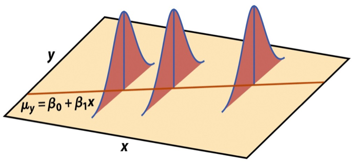
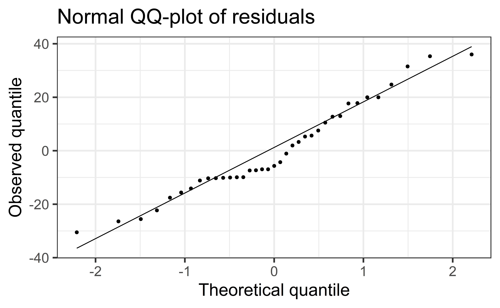

# load packages
library(tidyverse) # for data wrangling and visualization
library(tidymodels) # for modeling
library(openintro) # for the duke_forest dataset
library(scales) # for pretty axis labels
library(knitr) # for pretty tables
library(kableExtra) # also for pretty tables
library(patchwork) # arrange plots
# set default theme and larger font size for ggplot2
ggplot2::theme_set(ggplot2::theme_bw(base_size = 20))SLR: Conditions + Model evaluation
Announcements
HW 01: due TODAY at 11:59pm
Lab 03:
due Fri at 11:59pm (Tue labs)
due Sun at 11:59pm (Thu labs)
Looking ahead: Exam 01:
Closed note in-class: Wed, Oct 4
Open note take-home: Wed, Oct 4 - Fri, Oct 6
- Released after Section 002
More about the exam next week
Questions from last class?
Computational set up
Regression model, revisited
df_fit <- linear_reg() |>
set_engine("lm") |>
fit(price ~ area, data = duke_forest)
tidy(df_fit) |>
kable(digits = 3)| term | estimate | std.error | statistic | p.value |
|---|---|---|---|---|
| (Intercept) | 116652.325 | 53302.463 | 2.188 | 0.031 |
| area | 159.483 | 18.171 | 8.777 | 0.000 |
Mathematical representation, visualized
\[ Y|X \sim N(\beta_0 + \beta_1 X, \sigma_\epsilon^2) \]

Model conditions
Model conditions
- Linearity: There is a linear relationship between the outcome and predictor variables
- Constant variance: The variability of the errors is equal for all values of the predictor variable
- Normality: The errors follow a normal distribution
- Independence: The errors are independent from each other
Linearity
If the linear model, \(\hat{y}_i = \hat{\beta}_0 + \hat{\beta}_1x_i\) adequately describes the relationship between \(X\) and \(Y\), then the residuals should reflect random (chance) error
To assess this, we can look at a plot of the residuals vs. the fitted values
Linearity satisfied if there is no distinguishable pattern in the residuals plot, i.e. the residuals should be randomly scattered
A non-random pattern (e.g. a parabola) suggests a linear model does not adequately describe the relationship between \(X\) and \(Y\)
Linearity
✅ The residuals vs. fitted values plot should show a random scatter of residuals (no distinguishable pattern or structure)

Residuals vs. fitted values (code)
df_aug <- augment(df_fit$fit)
ggplot(df_aug, aes(x = .fitted, y = .resid)) +
geom_point() +
geom_hline(yintercept = 0, linetype = "dashed") +
ylim(-1000000, 1000000) +
labs(
x = "Fitted value", y = "Residual",
title = "Residuals vs. fitted values"
)Non-linear relationships


Constant variance
If the spread of the distribution of \(Y\) is equal for all values of \(X\)then the spread of the residuals should be approximately equal for each value of \(X\)
To assess this, we can look at a plot of the residuals vs. the fitted values
Constant variance satisfied if the vertical spread of the residuals is approximately equal as you move from left to right (i.e. there is no “fan” pattern)
A fan pattern suggests the constant variance assumption is not satisfied and transformation or some other remedy is required (more on this later in the semester)
Constant variance
✅ The vertical spread of the residuals is relatively constant across the plot
Non-constant variance
Normality
The linear model assumes that the distribution of \(Y\) is Normal for every value of \(X\)
This is impossible to check in practice, so we will look at the overall distribution of the residuals to assess if the normality assumption is satisfied
Normality satisfied if a histogram of the residuals is approximately normal
- Can also check that the points on a normal QQ-plot falls along a diagonal line
Most inferential methods for regression are robust to some departures from normality, so we can proceed with inference if the sample size is sufficiently large, \(n > 30\)
Normality
Check normality using a QQ-plot
Code
ggplot(df_aug, aes(x = .resid)) +
geom_histogram(binwidth = 50000, color = "white") +
labs(
x = "Residual",
y = "Count",
title = "Histogram of residuals"
)Code
ggplot(df_aug, aes(sample = .resid)) +
stat_qq()+
stat_qq_line() +
labs(x = "Theoretical quantile",
y = "Observed quantile",
title = "Normal QQ-plot of residuals")Assess whether residuals lie along the diagonal line of the Quantile-quantile plot (QQ-plot).
If so, the residuals are normally distributed.
Normality

❌ The residuals do not appear to follow a normal distribution, because the points do not lie on the diagonal line, so normality is not satisfied.
✅ The sample size \(n = 98 > 30\), so the sample size is large enough to relax this condition and proceed with inference.
Independence
We can often check the independence assumption based on the context of the data and how the observations were collected
Two common violations of the independence assumption:
Serial Effect: If the data were collected over time, plot the residuals in time order to see if there is a pattern (serial correlation)
Cluster Effect: If there are subgroups represented in the data that are not accounted for in the model (e.g., type of house), you can color the points in the residual plots by group to see if the model systematically over or under predicts for a particular subgroup
Independence
Recall the description of the data:
Data on houses that were sold in the Duke Forest neighborhood of Durham, NC around November 2020
Scraped from Zillow
✅ Based on the information we have, we can reasonably treat this as a random sample of Duke Forest Houses and assume the error for one house does not tell us anything about the error for another house.
Recap
Used residual plots to check conditions for SLR:
- Linearity
- Constant variance
- Normality
- Independence
. . .
Which of these conditions are required for fitting a SLR? Which for simulation-based inference for the slope for an SLR? Which for inference with mathematical models?
Ed Discussion [Section 001][Section 002]
03:00
Comparing inferential methods
What are the advantages of using simulation-based inference methods? What are the advantages of using inference methods based on mathematical models?
Under what scenario(s) would you prefer to use simulation-based methods? Under what scenario(s) would you prefer to use methods based on mathematical models?
02:00
Application exercise
Model evaluation
Two statistics
R-squared, \(R^2\) : Percentage of variability in the outcome explained by the regression model (in the context of SLR, the predictor)
\[ R^2 = Cor(x,y)^2 = Cor(y, \hat{y})^2 \]
Root mean square error, RMSE: A measure of the average error (average difference between observed and predicted values of the outcome)
\[ RMSE = \sqrt{\frac{\sum_{i = 1}^n (y_i - \hat{y}_i)^2}{n}} \]
. . .
What indicates a good model fit? Higher or lower \(R^2\)? Higher or lower RMSE?
\(R^2\)
Ranges between 0 (terrible predictor) and 1 (perfect predictor)
Has no units
Calculate with
rsq()using the augmented data:
rsq(df_aug, truth = price, estimate = .fitted)# A tibble: 1 × 3
.metric .estimator .estimate
<chr> <chr> <dbl>
1 rsq standard 0.445Interpreting \(R^2\)
üó≥Ô∏è Discussion
The \(R^2\) of the model for price from area of houses in Duke Forest is 44.5%. Which of the following is the correct interpretation of this value?
- Area correctly predicts 44.5% of price for houses in Duke Forest.
- 44.5% of the variability in price for houses in Duke Forest can be explained by area.
- 44.5% of the variability in area for houses in Duke Forest can be explained by price
- 44.5% of the time price for houses in Duke Forest can be predicted by area.
Alternative approach for \(R^2\)
Alternatively, use glance() to construct a single row summary of the model fit, including \(R^2\):
glance(df_fit)# A tibble: 1 × 12
r.squared adj.r.squared sigma statistic p.value df logLik AIC BIC
<dbl> <dbl> <dbl> <dbl> <dbl> <dbl> <dbl> <dbl> <dbl>
1 0.445 0.439 168798. 77.0 6.29e-14 1 -1318. 2641. 2649.
# ℹ 3 more variables: deviance <dbl>, df.residual <int>, nobs <int>. . .
glance(df_fit)$r.squared[1] 0.4451945RMSE
Ranges between 0 (perfect predictor) and infinity (terrible predictor)
Same units as the response variable
Calculate with
rmse()using the augmented data:rmse(df_aug, truth = price, estimate = .fitted)# A tibble: 1 × 3 .metric .estimator .estimate <chr> <chr> <dbl> 1 rmse standard 167067.The value of RMSE is not very meaningful on its own, but it’s useful for comparing across models (more on this when we get to regression with multiple predictors)
Obtaining \(R^2\) and RMSE
Use
rsq()andrmse(), respectivelyrsq(df_aug, truth = price, estimate = .fitted) rmse(df_aug, truth = price, estimate = .fitted)First argument: data frame containing
truthandestimatecolumnsSecond argument: name of the column containing
truth(observed outcome)Third argument: name of the column containing
estimate(predicted outcome)